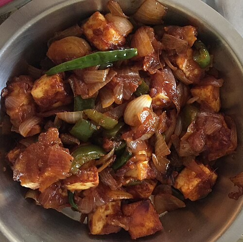

Home
Chilli Paneer

Description
Chilli Paneer is a popular Indo-Chinese dish made with crispy fried paneer cubes tossed in a spicy, tangy sauce
with onions and bell peppers. It's a fusion favorite served as an appetizer or side dish.
Ingredients
- 200g paneer (cubed)
- 2 tbsp cornflour
- 2 tbsp all-purpose flour (maida)
- Salt & pepper to taste
- Oil (for frying)
For the sauce:
- 1 tbsp oil
- 1 tsp garlic (minced)
- 1 green chili (sliced)
- 1 small onion (cubed)
- 1/2 bell pepper (any color, cubed)
- 1 tbsp soy sauce
- 1 tbsp chili sauce
- 1 tbsp tomato ketchup
- 1 tsp vinegar
- Spring onions (for garnish)
Steps
- Mix cornflour, flour, salt, and pepper with water to form a coating batter.
- Dip paneer cubes and shallow or deep fry until golden and crisp. Set aside.
- Heat oil in a wok, sauté garlic and green chili.
- Add onions and bell peppers, stir-fry on high heat for 2-3 minutes.
- Add sauces (soy, chili, ketchup) and vinegar. Mix well.
- Toss in fried paneer, coat evenly in the sauce.
- Garnish with chopped spring onions and serve hot.